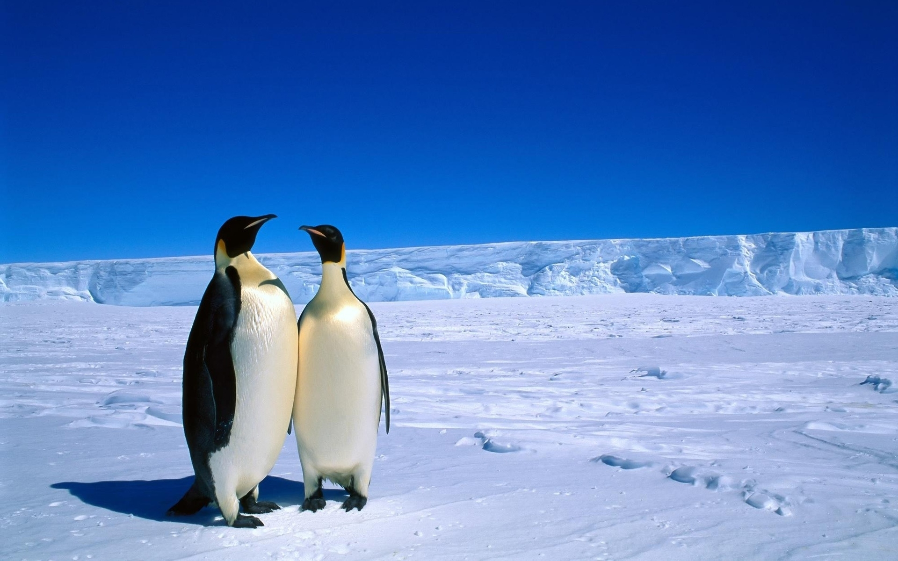

The poler anamals
Antarctica is the continect surrounding the South Pole and is the fifth largest continent. It is the coldest, windiest, and driest continent on Earth.
But on the other hand the arctic (here is some a cool fact) Despite the freezing-cold temperatures, approximately four million people call this wintery wonderland home! Amongst these are the people of the Arctic, called the 'Inuits'. They’ve found ways to survive in one of the harshest environments on our planet.
So lets get on to the facts.
- Many Arctic animals have evolved special adaptations and behaviours to deal with the extreme cold and hostile environment. These include: thick, layered coats, fur that changes color with the seasons.
- The Arctic Tern experience two summers every year! At both of the reigons.
- Also known as the killer whale, this sharp toothed whale is also member of the dolphin family. Orcas have distinctive black backs and white chest and eye patches.
Now lets go to the other side of the world to visit Antarctica

- The wingless Antarctic Midge grows up to 6 mm in length. In Antarctica. It is also the only insect on mainland Antarctica.
- Penguins are distinctive flightless birds of the Southern Hemisphere. Their wings have evolved into flippers, which they use to glide through the water in hunger of krill, fish, and other prey.
- Wilson’s storm petrel is one of the world’s commonest species of bird. Found all around the Southern Hemisphere, and in many parts of the Northern Hemisphere, it spends its life at sea and only returns to land only to breed.